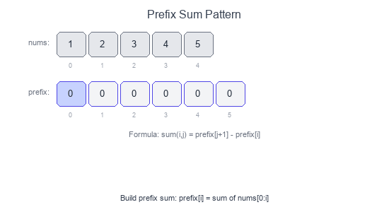

Introduction to Prefix Sum Pattern
The Prefix Sum pattern precomputes cumulative sums to answer range sum queries in O(1) time. Instead of summing elements repeatedly, you build a prefix array once and use subtraction to find any subarray sum.
Visual Example
Building and Using Prefix Sum

prefix[i] = sum of elements from index 0 to i-1.
Sum of nums[i:j] = prefix[j] - prefix[i].
Key Formula
prefix[0] = 0
prefix[i] = prefix[i-1] + nums[i-1]
sum(nums[i:j]) = prefix[j] - prefix[i]
When to Use
- Multiple range sum queries on static array.
- Find subarray with target sum.
- Count subarrays with specific sum property.
- 2D matrix sum queries.
- Problems involving "sum equals K" or "sum divisible by K".
Pattern Recipe
- Build prefix array:
prefix[i] = prefix[i-1] + nums[i-1]. - Query:
sum(i, j) = prefix[j+1] - prefix[i]. - For counting problems: Use hashmap to store prefix sum frequencies.
Complexity
- Build: $O(n)$
- Query: $O(1)$
- Space: $O(n)$ for prefix array
Short Examples — Python
Basic Prefix Sum
def build_prefix(nums: list[int]) -> list[int]:
prefix = [0] * (len(nums) + 1)
for i in range(len(nums)):
prefix[i + 1] = prefix[i] + nums[i]
return prefix
def range_sum(prefix: list[int], i: int, j: int) -> int:
"""Sum of nums[i:j+1] (inclusive)."""
return prefix[j + 1] - prefix[i]
# Example:
# nums = [1, 2, 3, 4, 5]
# prefix = [0, 1, 3, 6, 10, 15]
# sum(1, 3) = prefix[4] - prefix[1] = 10 - 1 = 9 (2+3+4)
Subarray Sum Equals K
def subarray_sum(nums: list[int], k: int) -> int:
"""Count subarrays with sum equal to k."""
count = 0
prefix_sum = 0
prefix_count = {0: 1} # Empty prefix has sum 0
for num in nums:
prefix_sum += num
# If (prefix_sum - k) exists, we found subarrays
if prefix_sum - k in prefix_count:
count += prefix_count[prefix_sum - k]
prefix_count[prefix_sum] = prefix_count.get(prefix_sum, 0) + 1
return count
# Example: [1, 1, 1], k=2 → 2 subarrays: [1,1] at index 0-1 and 1-2
Subarray Sum Divisible by K
def subarrays_div_by_k(nums: list[int], k: int) -> int:
"""Count subarrays with sum divisible by k."""
count = 0
prefix_sum = 0
remainder_count = {0: 1}
for num in nums:
prefix_sum += num
remainder = prefix_sum % k
# Handle negative remainders
if remainder < 0:
remainder += k
if remainder in remainder_count:
count += remainder_count[remainder]
remainder_count[remainder] = remainder_count.get(remainder, 0) + 1
return count
# Example: [4, 5, 0, -2, -3, 1], k=5 → 7
Find Pivot Index (Left sum equals right sum)
def pivot_index(nums: list[int]) -> int:
total = sum(nums)
left_sum = 0
for i, num in enumerate(nums):
# Right sum = total - left_sum - nums[i]
if left_sum == total - left_sum - num:
return i
left_sum += num
return -1
# Example: [1, 7, 3, 6, 5, 6] → 3 (left: 1+7+3=11, right: 5+6=11)
Product of Array Except Self
def product_except_self(nums: list[int]) -> list[int]:
n = len(nums)
result = [1] * n
# Left products
left_product = 1
for i in range(n):
result[i] = left_product
left_product *= nums[i]
# Right products
right_product = 1
for i in range(n - 1, -1, -1):
result[i] *= right_product
right_product *= nums[i]
return result
# Example: [1, 2, 3, 4] → [24, 12, 8, 6]
2D Prefix Sum (Range Sum Query)
class NumMatrix:
def __init__(self, matrix: list[list[int]]):
if not matrix:
return
rows, cols = len(matrix), len(matrix[0])
self.prefix = [[0] * (cols + 1) for _ in range(rows + 1)]
for r in range(rows):
for c in range(cols):
self.prefix[r+1][c+1] = (
matrix[r][c]
+ self.prefix[r][c+1]
+ self.prefix[r+1][c]
- self.prefix[r][c]
)
def sum_region(self, r1: int, c1: int, r2: int, c2: int) -> int:
return (
self.prefix[r2+1][c2+1]
- self.prefix[r1][c2+1]
- self.prefix[r2+1][c1]
+ self.prefix[r1][c1]
)
# Visualize 2D prefix:
# □ □ □ Query (r1,c1) to (r2,c2):
# □ ■ ■ = prefix[r2+1][c2+1]
# □ ■ ■ - prefix[r1][c2+1] (top)
# - prefix[r2+1][c1] (left)
# + prefix[r1][c1] (overlap)
Maximum Subarray Sum (Kadane's via prefix)
def max_subarray_prefix(nums: list[int]) -> int:
"""
max(prefix[j] - prefix[i]) where j > i
= prefix[j] - min(prefix[0..j-1])
"""
max_sum = float('-inf')
prefix_sum = 0
min_prefix = 0
for num in nums:
prefix_sum += num
max_sum = max(max_sum, prefix_sum - min_prefix)
min_prefix = min(min_prefix, prefix_sum)
return max_sum
Continuous Subarray Sum (Multiple of K)
def check_subarray_sum(nums: list[int], k: int) -> bool:
"""Check if subarray of length >= 2 has sum multiple of k."""
remainder_index = {0: -1}
prefix_sum = 0
for i, num in enumerate(nums):
prefix_sum += num
remainder = prefix_sum % k if k != 0 else prefix_sum
if remainder in remainder_index:
if i - remainder_index[remainder] >= 2:
return True
else:
remainder_index[remainder] = i
return False
Binary Subarrays With Sum
def num_subarrays_with_sum(nums: list[int], goal: int) -> int:
"""Count subarrays with sum equal to goal (binary array)."""
count = 0
prefix_sum = 0
prefix_count = {0: 1}
for num in nums:
prefix_sum += num
if prefix_sum - goal in prefix_count:
count += prefix_count[prefix_sum - goal]
prefix_count[prefix_sum] = prefix_count.get(prefix_sum, 0) + 1
return count
Common Patterns
| Problem | Technique |
|---|---|
| Range sum | prefix[j] - prefix[i] |
| Sum equals K | HashMap of prefix sums |
| Sum divisible by K | HashMap of remainders |
| Pivot index | Compare left and right sums |
| 2D range sum | 2D prefix with inclusion-exclusion |
Common Pitfalls
- Off-by-one errors with prefix indices.
- Forgetting to handle empty prefix (prefix_count[0] = 1).
- Negative remainder in "divisible by K" problems.
- Not handling k=0 case separately.